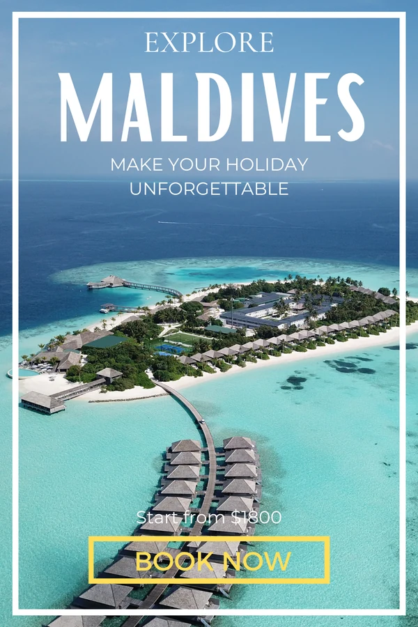
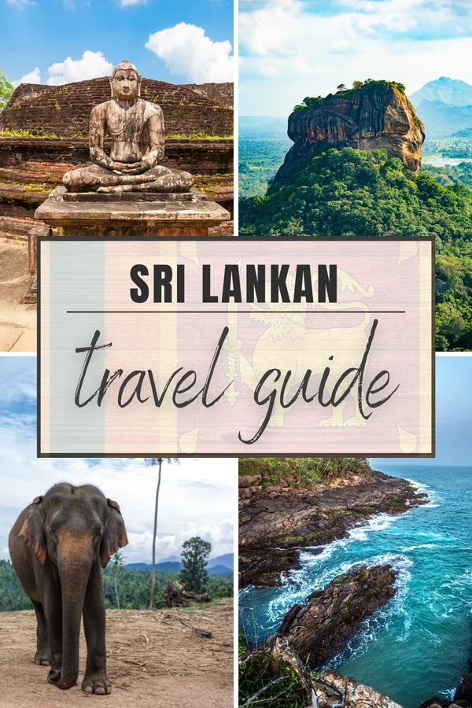
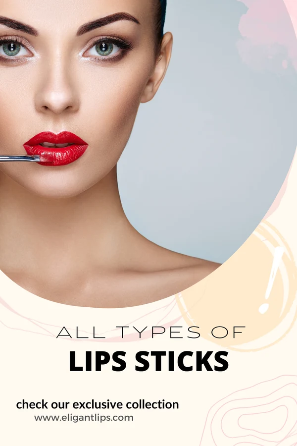
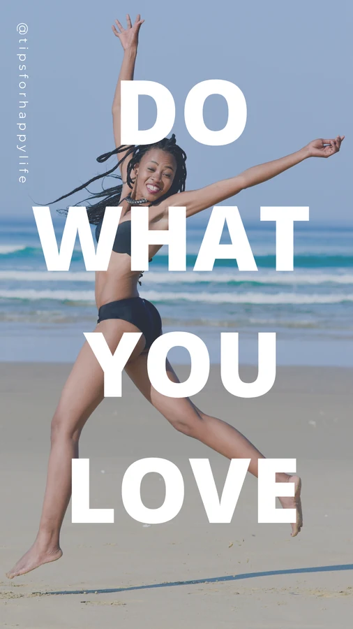
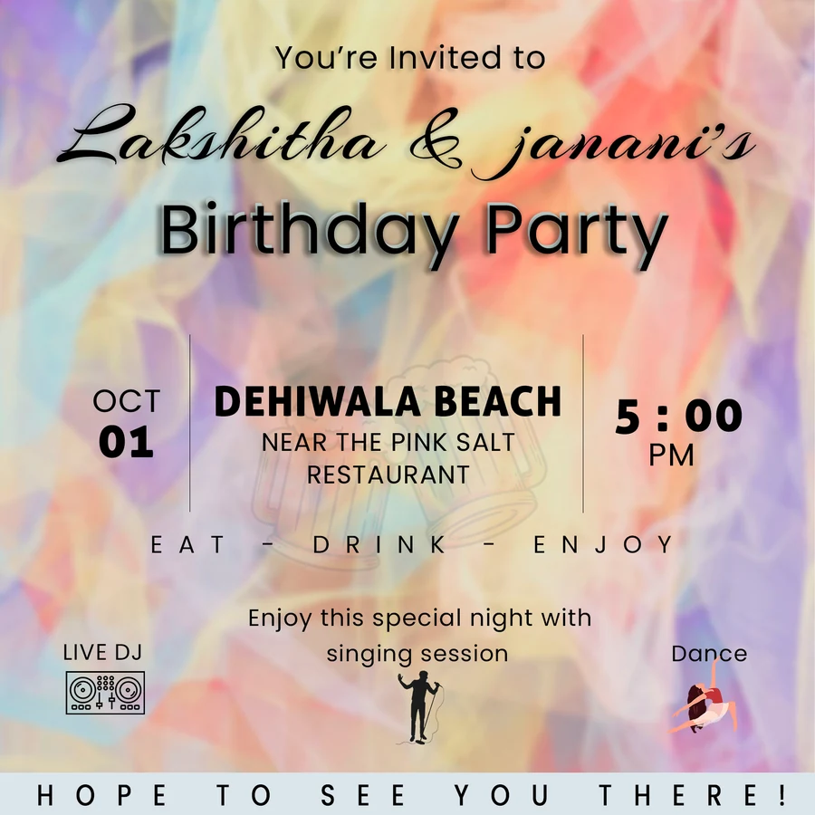
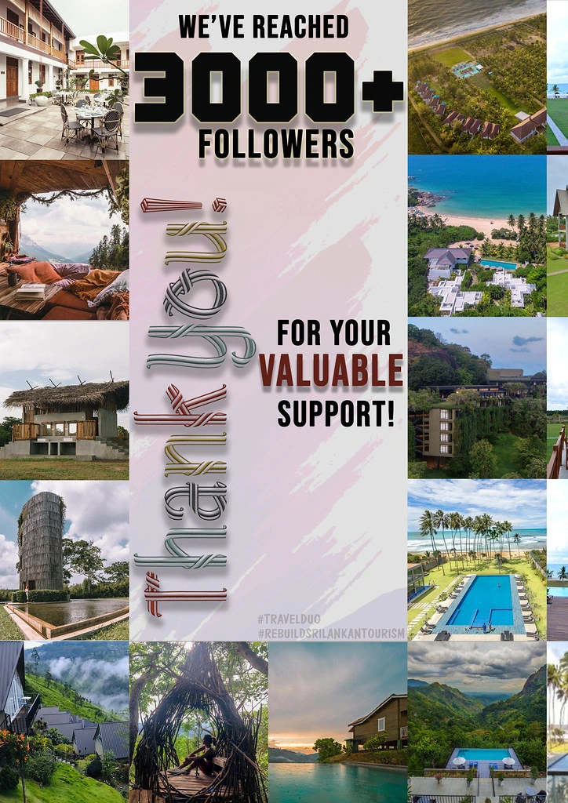
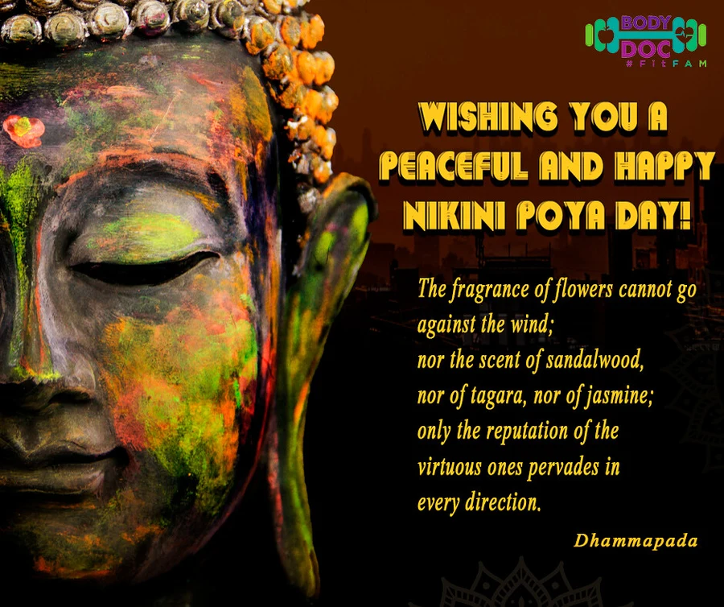

SOCIAL CONTENT / 07
Made to catch the eye
Travel, beauty, education, and event graphics with clear messages and a visual focal point.
Digital graphics · Promotional layoutTHE PROJECT
Digital content & promotional graphics
A selection of promotional layouts for different subjects and formats. The collection includes destination graphics, a beauty promotion, an educational graphic, a motivational story layout, and a party invitation.
MY DESIGN APPROACH
Image-led compositions establish the subject quickly. Headlines, supporting copy, and colour contrast then guide attention to the message. The different pieces explore how a consistent reading order can work across very different visual moods.
DESIGN OBJECTIVE
Introduce the subject quickly and make the central message readable in a social feed.
Objective interpreted from the artwork; original customer brief not supplied.
COLOUR & CONTRAST
Each subject has its own palette. Warm accents stand out against cool photographs, while quieter backgrounds let portrait and headline-led layouts carry the message.






